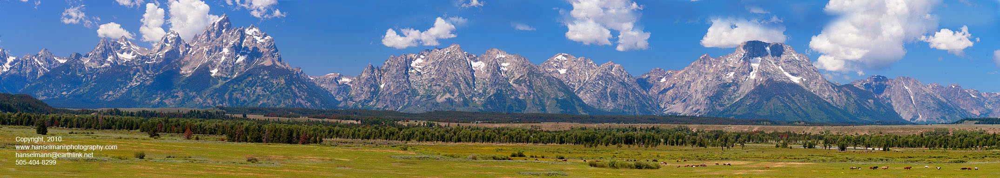
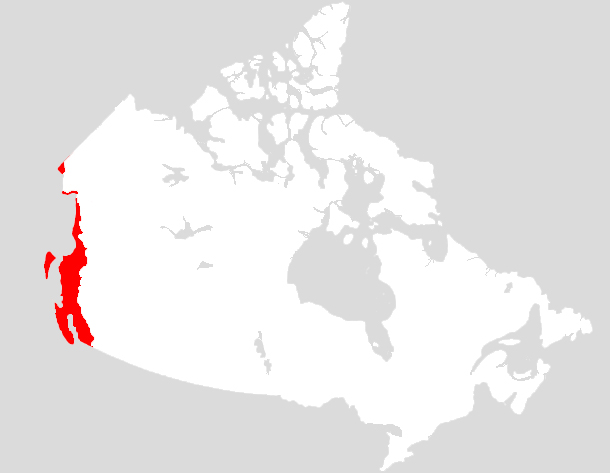
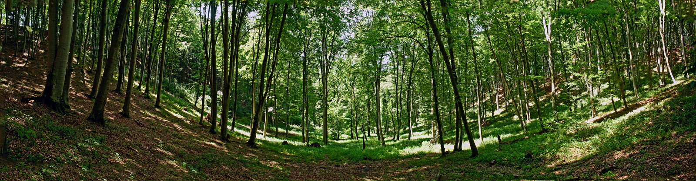

The pacific maritime is a terrestrial ecozone located along the coast of British columbia, borders Alaska, and covers a small portion of the Yukon territory. Major cities include Vancouver, Victoria, and Prince Rupert.
The climate in the Pacific maritime is very moderate due to being near the Pacific Ocean. Because it has a maritime climate, winters tend to be more mild and summers are much cooler. The average summer temperature is about 12-13 degrees celsius and winters are about -1 degrees. The range between monthly temperatures are very little compared to the rest of Canada. Being near water also causes the Pacific maritime to have one of the wettest weather. The highest precipitation received is about 5,000 mm per year and the lowest was about 500 mm.
The Pacific Maritime covers about 196,200 kilometers square of land. The Coast mountains take up majority of this ecozone. Due to being very young, they are very steep and rugged therefore, erosion has not happened yet. At the very highest elevations, glaciers and ice sheets are found. The mountains are mostly made up of granite. Fiords are also other landforms to look out for and there are many in the Pacific Maritime. A fiord is an inlet of sea between mountains. They can be up to 190 kilometers wide and 2000 km deep. Another major landform is the forests which covers about 50 percent of the ecozone. There are 5 major forest in the ecozone:

Since the Pacific Maritime ecozone is part of the Ring of Fire, many hot springs are scattered throughout. These tend to smell because of the sulfur content. In these areas, magma is very close to the surface and so it causes the water to be very hot.
The wildlife in the pacific maritime is bountiful and one of the most diverse in Canada as a result of large area of land. The forests, fiords, and ocean inhabit some of the most amazing wildlife species.
Land mammals mostly occupy the forested land. Some of the most common ones found here are the Black-tailed Dear, Cougar or Mountain Lion, Black and Grizzly Bears
Birds also take a large percentage of the existing land mammals in this region. Some of the incredible bird species include, the Tufted Puffin, Bald Eagle, and the Blue grouse
The pacific maritime lies along the coast of the Pacific Maritime and therefore is home to several different types of fish and other aquatic mammals. The ones that are most frequently found include, the Killer whale, Blue whale, Harbour seal, salmon, and cutthroat trout
The large amounts of precipitation, mild weather, and rich soil all contribute to the existence of the astonishing natural vegetation that can be found here. It is home to the one and only rainforest in Canada, which is the Great Bear Rainforest. This incredible rainforest covers about 106,000 square kilometers of land. It mostly consists of trees such as: Western Hemlock, Red Cedar, Douglas Fir, Sitka Spruce. The vegetation is absolutely stunning, to the point that some have broken world records! This ecozone inhabits the world’s tallest Sitka Spruce tree, which measures just above 95 meters high. Also, one can also find Red Cedar trees that are up to 2,000 years old!
There is a vast variety of natural vegetation in the Pacific Maritime ecozone because of incredible soil. The soil here is very rich in humus and it plays a big role in the growth and lifespan of the trees. Nevertheless, the higher the elevation, the less nutrients the soil has and it’s not as nourishing.
There are many trees